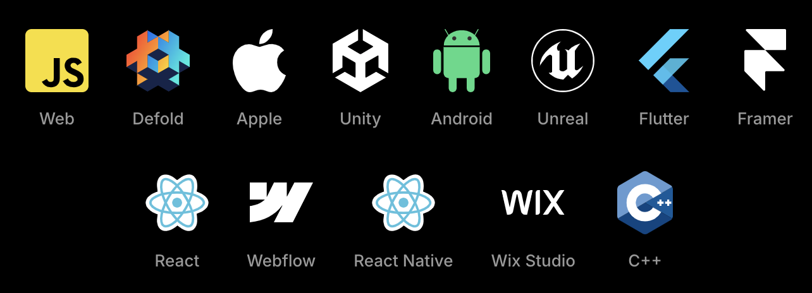

class: center, middle # Rive : animations interactives nouvelle génération ? --- ## Rive 🚀 Technologie d'animation vectorielle E2E. ✨ Design -> Build -> Animate -> Use [https://rive.app/](https://rive.app/) --- ## Le Logiciel 🔥 Hyper puissant, intuitif, réactif. Développé en flutter 😏 == DEMO == --- ## Les runtimes  [https://rive.app/runtimes](https://rive.app/runtimes) --- ## 💫 Nombreux points de contrôle - state machines - inputs - listeners == DEMO == --- # Ma conclusion (à date) ⚠️ Le prix, prohibitif dès lors qu'on veut accéder à toutes les fonctionnalités ⚠️ Le logiciel qui n'est pas open-source. On peut s'interroger sur la perennité de cette solution ⚠️ Risques de sécurité liés à l'exécution d'animations interactives, contrôlables par l'utilisateur ? ✅ Logiciel vraiment simple d'utilisation, même pour un débutant ✅ Possibilités immenses en termes d'intéractivité grâce aux machines à état, inputs, listeners ✅ Animations légères, performantes, multiplateformes --- ## Ressources - [Rive](https://rive.app/) - [Rive 101](https://www.youtube.com/watch?v=UNPgrK-qtsA&list=PLujDTZWVDSsFGonP9kzAnvryowW098-p3) - [12 principles of animation](https://www.youtube.com/watch?v=uDqjIdI4bF4) - [The animator's survival kit](https://www.amazon.com/Animators-Survival-Kit-Expanded-Principles/dp/0571238343)